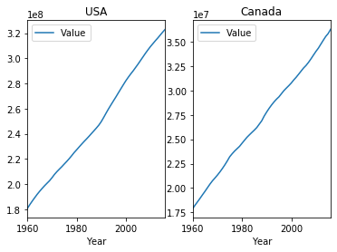
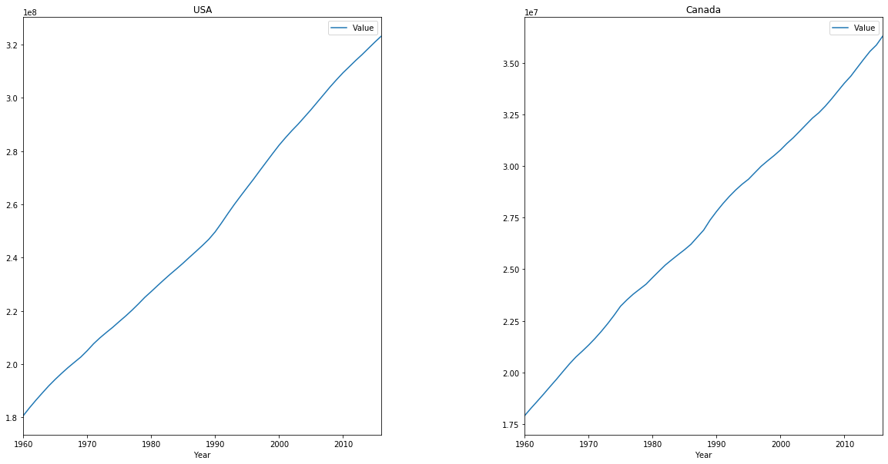
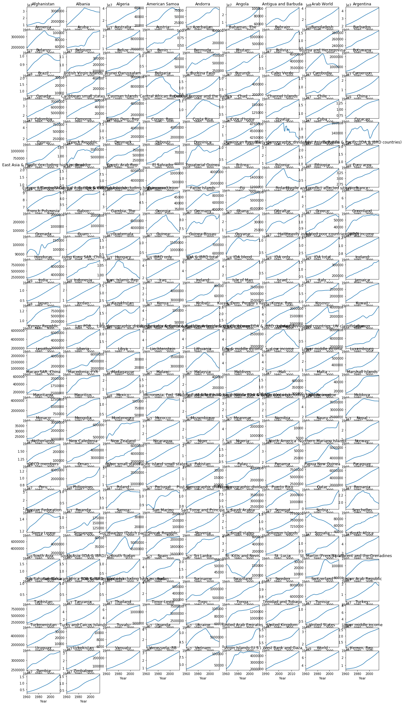

Subplots and Enumeration - Lab#
Introduction#
In this lab, we’ll get some practice creating subplots and explore how we can use the enumerate keyword to make creating them a bit easier!
Objectives#
You will be able to:
Create subplots using a Matplotlib figure
Use the enumerate function in a for loop to track the index while iterating over a collection
Getting Started#
For this lab, we’ll explore a dataset containing yearly population data about different countries and regions around the globe. Let’s start by importing the dataset so we can get to work.
In the cell below:
Import
pandasand set the standard alias ofpdImport the
pyplotmodule frommatplotliband set the standard alias ofpltSet matplotlib visualizations to appear inline with the command
%matplotlib inline
import pandas as pd
import matplotlib.pyplot as plt
%matplotlib inline
Now, let’s import the dataset.
In the cell below:
Use
pandasto read in the data stored in the file'population.csv'Print the first five rows of the DataFrame to ensure everything loaded correctly and get a feel for what this dataset contains
# Import the file
df = pd.read_csv('population.csv')
# Print the first five rows
df.head()
| Country Name | Country Code | Year | Value | |
|---|---|---|---|---|
| 0 | Arab World | ARB | 1960 | 92490932.0 |
| 1 | Arab World | ARB | 1961 | 95044497.0 |
| 2 | Arab World | ARB | 1962 | 97682294.0 |
| 3 | Arab World | ARB | 1963 | 100411076.0 |
| 4 | Arab World | ARB | 1964 | 103239902.0 |
Our columns look fairly standard. Let’s take a look at the value_counts() of the 'Country Name' column to get a feel for how many years there are per country.
Do this now in the cell below.
# Look at the value_counts() of the 'Country Name' column
df['Country Name'].value_counts()
Arab World 57
Burundi 57
Europe & Central Asia (IDA & IBRD countries) 57
Low & middle income 57
World 57
Panama 57
Maldives 57
Slovak Republic 57
Honduras 57
Cayman Islands 57
Tanzania 57
Middle East & North Africa 57
Peru 57
Burkina Faso 57
Lao PDR 57
Kosovo 57
Solomon Islands 57
Thailand 57
Guam 57
Cuba 57
OECD members 57
Kazakhstan 57
Estonia 57
Botswana 57
British Virgin Islands 57
Sub-Saharan Africa (IDA & IBRD countries) 57
European Union 57
United Kingdom 57
Swaziland 57
New Zealand 57
..
Bosnia and Herzegovina 57
Fragile and conflict affected situations 57
Andorra 57
Pre-demographic dividend 57
Aruba 57
San Marino 57
Iran, Islamic Rep. 57
Armenia 57
Suriname 57
IBRD only 57
Bangladesh 57
Tajikistan 57
Middle East & North Africa (IDA & IBRD countries) 57
Mali 57
Iceland 57
Puerto Rico 57
Small states 57
Djibouti 57
Channel Islands 57
Macedonia, FYR 57
Caribbean small states 57
Cote d'Ivoire 57
Central African Republic 57
Spain 57
Greece 57
Kuwait 54
Eritrea 52
Serbia 27
West Bank and Gaza 27
Sint Maarten (Dutch part) 19
Name: Country Name, Length: 263, dtype: int64
Groupings and Subplots#
When creating subplots, it makes sense that we’ll usually want the plots to contain data that is related to one another, so that the subplots will make it easy to visually compare and see trends or patterns. The easiest way to do this is to group our data by the types of information we’re most interested in seeing. For this dataset, that means that we can group by 'Country Name', by 'Country Code', or by 'Year'. Let’s start by grouping by name.
For our first subplot, we’ll create 1 row containing 2 subplots. Let’s start by getting some data for each of our plots. We’ll do this by slicing data for the USA and Canada and storing them in separate variables.
In the cell below:
Slice all the rows for ‘
United States’ and store them in the appropriate variable.Slice all the rows for ‘
Canada’ and store them in the appropriate variable.Inspect the
head()of each to ensure that we grabbed the data correctly.
# Slice all the rows for USA
usa = df[df['Country Name']=='United States']
# Inspect the head of USA
display(usa.head())
# Slice all the rows for Canada
canada = df[df['Country Name']=='Canada']
# Inspect the head of Canada
canada.head()
| Country Name | Country Code | Year | Value | |
|---|---|---|---|---|
| 14288 | United States | USA | 1960 | 180671000.0 |
| 14289 | United States | USA | 1961 | 183691000.0 |
| 14290 | United States | USA | 1962 | 186538000.0 |
| 14291 | United States | USA | 1963 | 189242000.0 |
| 14292 | United States | USA | 1964 | 191889000.0 |
| Country Name | Country Code | Year | Value | |
|---|---|---|---|---|
| 4617 | Canada | CAN | 1960 | 17909009.0 |
| 4618 | Canada | CAN | 1961 | 18271000.0 |
| 4619 | Canada | CAN | 1962 | 18614000.0 |
| 4620 | Canada | CAN | 1963 | 18964000.0 |
| 4621 | Canada | CAN | 1964 | 19325000.0 |
Now that our data is ready, lets go ahead and create a basic subplot. For our first batch of subplots, we’ll use the quick way by making use of plt.subplot() and passing in the number of rows, number of columns, and the number of the subplots that we want to create. Then, we’ll create our plot by passing in the corresponding data.
When we call plt.subplot(), it will return an ax (short for ‘axis’) object that corresponds to the third parameter we pass in – the actual plot we will want to create. To create subplots on the fly with this method, we’ll:
Get the
axobject for the first plot in the subplot we want to create. Store this in the variableax1Call
.plot()on theusaDataFrame, and specify the following parameters:x='Year'y='Value'ax=ax1
Use the
ax1object’s methods to do any labeling we find necessaryRepeat the process for
canadawith the second plot. Store this axis inax2
Do this now in the cell below.
# Subplot for USA
ax1 = plt.subplot(1, 2, 1)
usa.plot(x='Year', y='Value', ax=ax1)
ax1.set_title("USA")
# Subplot for Canada
ax2 = plt.subplot(1, 2, 2)
canada.plot(x='Year', y='Value', ax=ax2)
ax2.set_title('Canada')
Text(0.5, 1.0, 'Canada')

Our plots look pretty good, but they’re a bit squished together, and the plots themselves are much too small, which squishes the axis values. Both of these problems have an easy fix. We’ll begin by using plt.figure() and passing in a larger figsize of (20, 10) to tell matplotlib we want the full subplot to be 20 inches by 10.
We can fix the spacing quite easily by using plt.subplots_adjust() and changing the amount of space in between our plots. The documentation for subplots_adjust tells us that the parameter we need to adjust is wspace. This is set to 0.2 by default, meaning that the amount of space between our plots is equal to 20% of the width of the plots. Let’s set wspace=0.4, and see how that looks.
In the cell below:
Call
plt.figure()and use thefigsizeparameter to set the size of the total subplot to 20 inches wide by 10 inches tall. Remember to pass these values in as a tuple, with width first and height secondCopy the visualization code from the cell above into the cell below
After setting the title for the Canada plot, add the line
plt.subplots_adjust()and pass in the parameterwspace=0.4
# Create figure
plt.figure(figsize=(20, 10))
ax1 = plt.subplot(1, 2, 1)
usa.plot(x='Year', y='Value', ax=ax1)
ax1.set_title("USA")
ax2 = plt.subplot(1, 2, 2)
canada.plot(x='Year', y='Value', ax=ax2)
ax2.set_title('Canada')
plt.subplots_adjust(wspace=0.4)

Much better!
Next, we’ll see some advanced methods for creating subplots. But, before we do that, let’s take a brief detour and learn about the enumerate keyword!
Using enumerate()#
Python’s enumerate() keyword is a special type of for loop. It works just like a regular for loop, with one major difference – instead of just returning the next object with each iteration of the loop, it also returns the index of the object from the collection we’re looping through!
Run the example code in the cell below, and examine the output. That should make it clear what is happening.
sample_list = ['foo', 'bar', 'baz']
for index, value in enumerate(sample_list):
print("Index: {} Value: {}".format(index, value))
Index: 0 Value: foo
Index: 1 Value: bar
Index: 2 Value: baz
The enumerate keyword is extremely helpful anytime we need to do something that needs the index of the item we’re looping through. Let’s try an example:
In the cell below:
enumerate()throughsample_list_2For any item in
sample_list_2, append it to theoddslist if it’s index is an odd numberOnce the loop has finished, print
odds
sample_list_2 = ['item at Index ' + str(i) for i in range(10)]
odds = []
for index, value in enumerate(sample_list_2):
if index % 2 == 1:
odds.append(value)
odds
['item at Index 1',
'item at Index 3',
'item at Index 5',
'item at Index 7',
'item at Index 9']
Great! There are plenty of situations where enumerate() comes in very handy. By allowing us to get the index and the value at the same time, it makes it simple to manipulate one variable based on the value of the other. This is a natural requirement of subplots.
Enumerating with Subplots#
To end this lab, we’ll see how we can use enumerate to easily subplot this entire DataFrame by country – all 263 of them!
It will work like this. We’ll begin by grouping each row in our DataFrame by 'Country Name'. Then, we’ll create a plt.figure() and set the figure size to (20,40). We’ll also set the facecolor to 'white', so that it’s a bit easier to read.
Then comes the fun part. We’ll enumerate through our grouped DataFrame. Just looping through a grouped DataFrame returns a tuple containing the index and the rows with that country name. Since we’re grouped by 'Country Name', this means that the index will actually be the 'Country Name'. However, we’re not just looping through the grouped DataFrame – we’re enumerate-ing through it!
for index, (value1, value2) in enumerate(grouped_DataFrame):
# index is an integer, starting at 0 and counting up by 1 just
# like we would expect a for loop to do
#(value1, value2) is a tuple containing the name of the country as value 1
# (since it is acting as the index because we grouped everything by it),
# and value 2 is all the rows that belong to that country's group.
This means that the index for our enumeration will be an integer value that counts higher by 1 with each country. If we just add 1 to it (because subplots start counting at 1, but Python starts counting at 0), then this number will correspond with the index we need to pass in as the third parameter in plt.subplot() – the parameter that specifies which plot inside the subplot should show the plot we’re about to create.
Don’t worry if this seems confusing – the code below has been commented to help you.
# Group the DataFrame by Country Name--this line has been provided for you
grouped_df = df.groupby('Country Name')
# pass in figsize=(20,40), and also set the facecolor parameter to 'white'
plt.figure(figsize=(20,40), facecolor="white")
# Complete the line below so that the first loop variable is the called index,
# and the second loop variable is the tuple (countryname, population).
for index, (countryname, population) in enumerate(grouped_df):
# Get the unique subplot where the plot we're creating during this iteration
# of the loop will live. Our subplot will be 30 rows of 9 plots each.
# Set the third value to be index+1
ax = plt.subplot(30, 9, index+1)
# Complete the line to create the plot for this subplot
population.plot(x='Year', y='Value', ax=ax, legend=False)
# Set the title of each plot, so we know which country it represents
ax.set_title(countryname)

Great job! Being able to effectively create subplots with matplotlib is a solid data visualization skill to have – and using enumerate() makes our code that much simpler!
Summary#
In this lab, we learned how to create advanced subplots using enumerate() on grouped DataFrames!